FOTOGRAFIE DIN ARHIVA CONDR GRUP
FOTOGRAFIE DIN ARHIVA CONDR GRUPPORT MALL
Port Mall
Condr Grup a executat întregul pachet de lucrări de demolare pentru intervențiile realizate la Port Mall în perioada 2023–2026.
Arhiva Condr Grup
O selecție din fotografiile reale Condr Grup, realizate în timpul lucrărilor de beton, structură, amenajare, renovare și demolare.
Proiecte de referință
Condr Grup a executat lucrări pe obiective comerciale, industriale și hoteliere importante din Chișinău. Mai jos prezentăm rolul concret al echipei la fiecare proiect.
FOTOGRAFIE DIN ARHIVA CONDR GRUPCondr Grup a executat întregul pachet de lucrări de demolare pentru intervențiile realizate la Port Mall în perioada 2023–2026.
 FOTOGRAFIE DIN ARHIVA CONDR GRUP
FOTOGRAFIE DIN ARHIVA CONDR GRUPExecuția integrală la cheie a restaurantului Bomond din Port Mall, de la lucrările interioare până la pregătirea spațiului pentru utilizare.
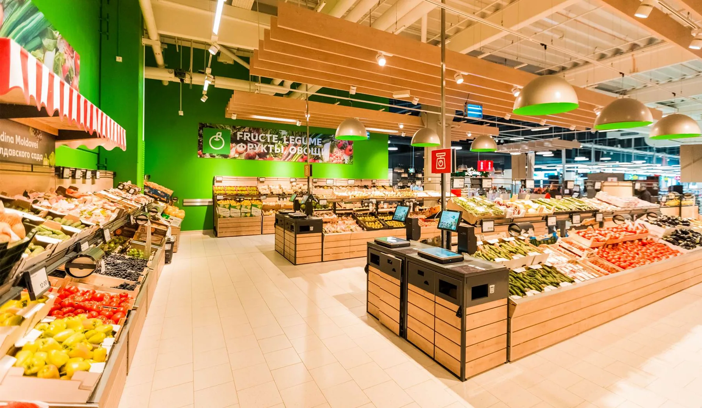
IMAGINE OBIECTIV · KAUFLAND MOLDOVA ↗Lucrări de construcție executate în 2020 pentru magazinul Kaufland Botanica de pe bd. Decebal 99/2, în zona bd. Dacia.
Lucrări de reparație capitală executate în 2026 în oficiul companiei Terra Avia din Chișinău.
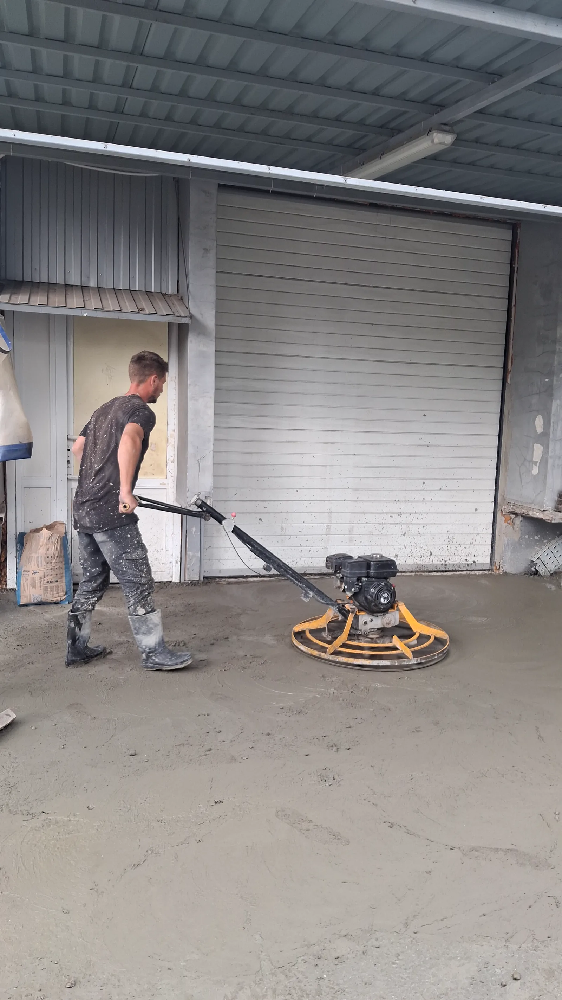
FOTOGRAFIE DIN ARHIVA CONDR GRUPTurnarea a 400 m² de beton și finisarea mecanizată a suprafeței cu elicopterul pe str. Feredeuca 4.
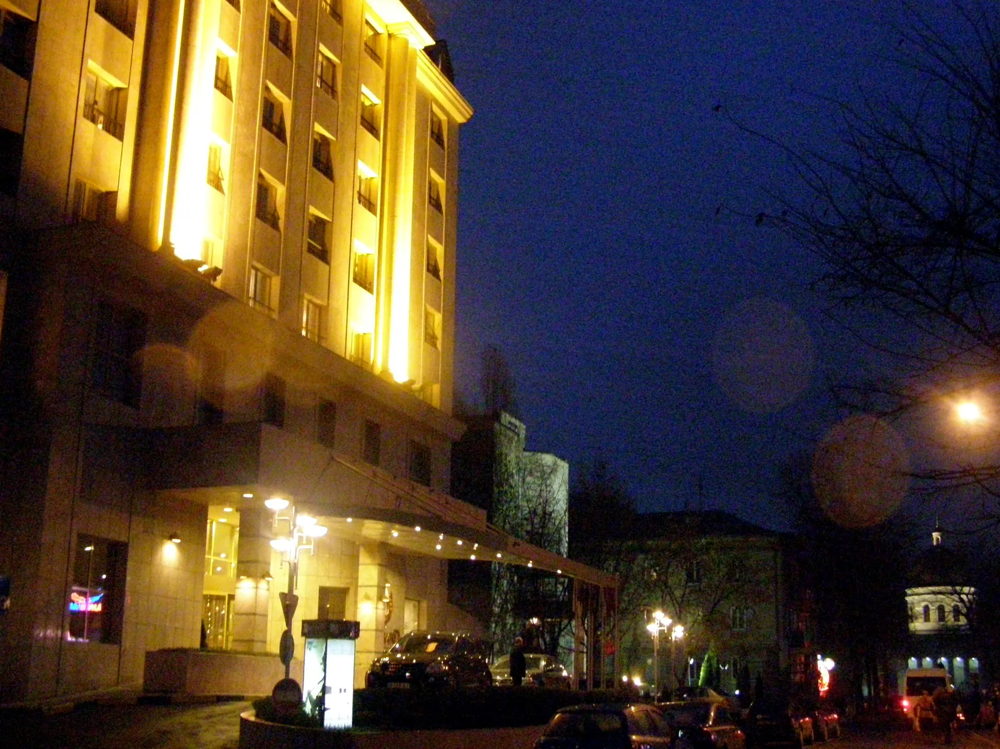
IMAGINE OBIECTIV · SERHIO · CC BY 3.0 ↗Participare la lucrările de construcție ale hotelului Radisson Blu Leogrand din Chișinău în anul 2016.
Și multe alte proiecte comerciale, industriale și rezidențiale, precum și lucrări executate pentru persoane fizice.
Informațiile despre lucrările executate sunt furnizate de Condr Grup. Imaginile marcate „imagine obiectiv” identifică proprietatea sau brandul și nu reprezintă fotografii din timpul execuției Condr Grup.
Arhiva de șantier
Filtrează după tip pentru a vedea imagini reale din etapele de beton, structură, amenajare, renovare și demolare.
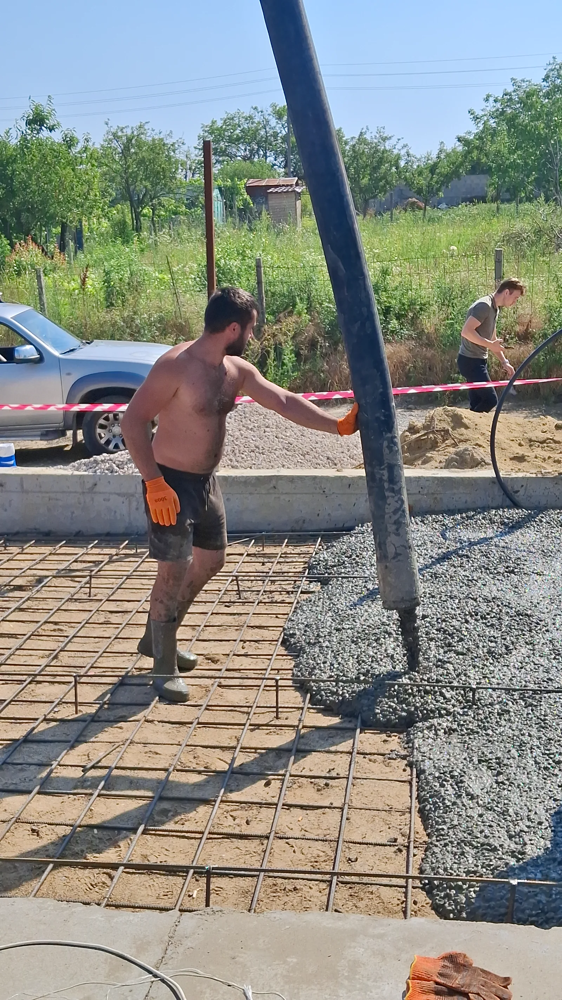

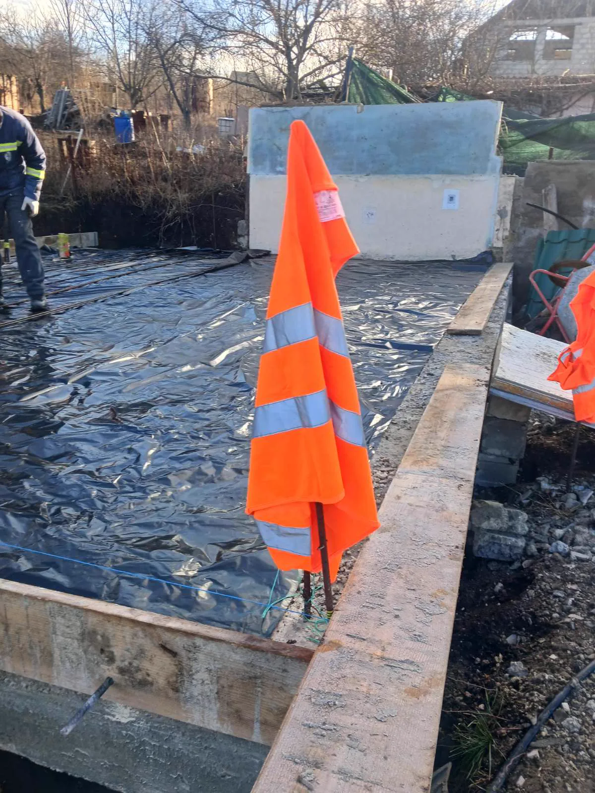
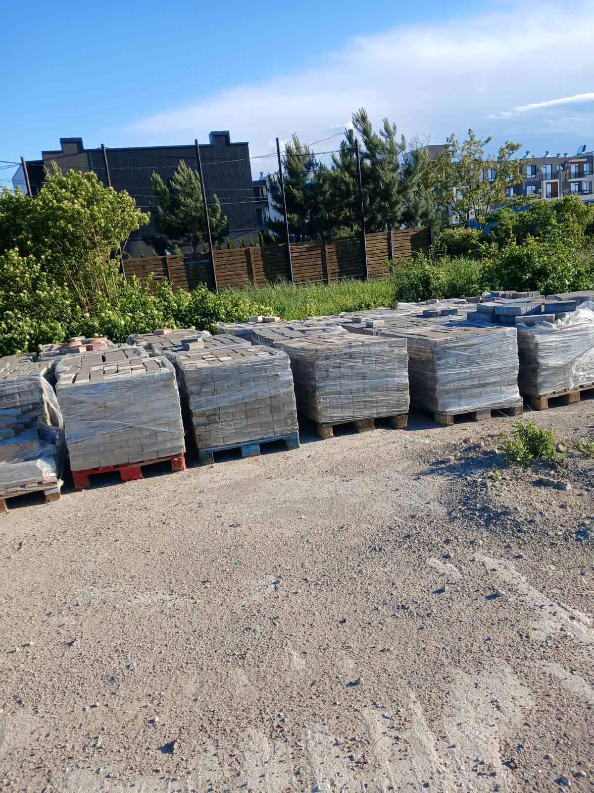


Adăugăm treptat proiecte și fotografii noi, după confirmarea detaliilor și acordul de publicare.
Bâc · proces
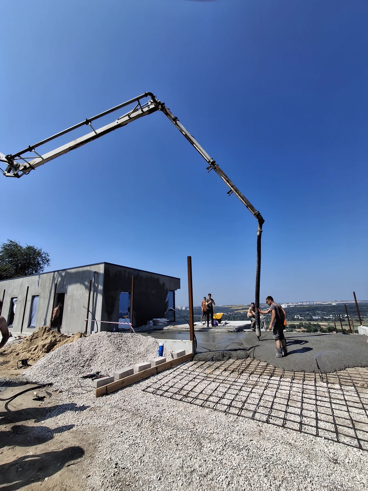
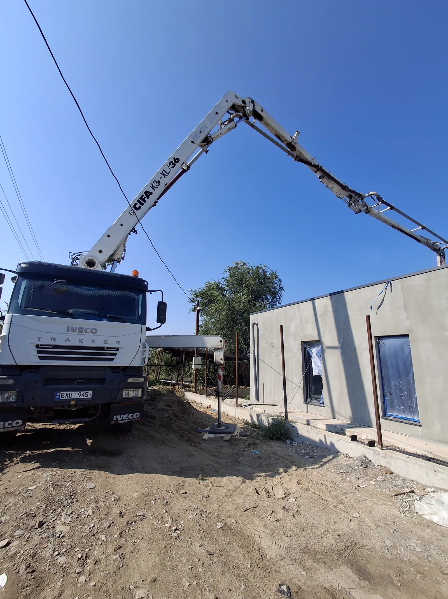
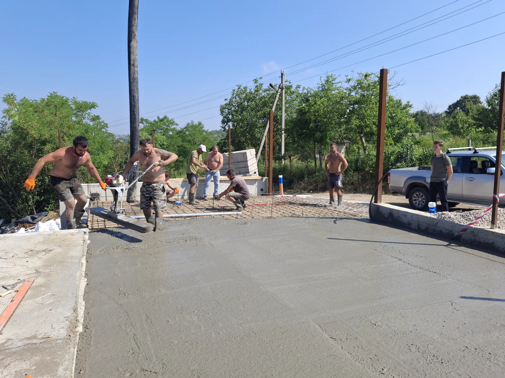
Feredeuca · proces
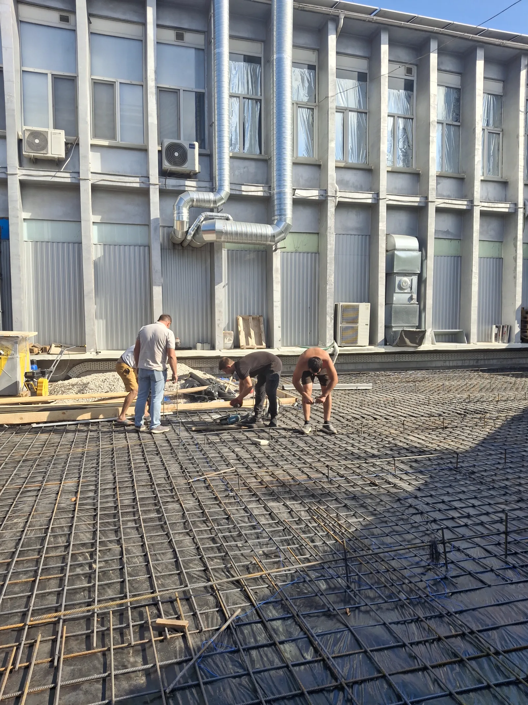
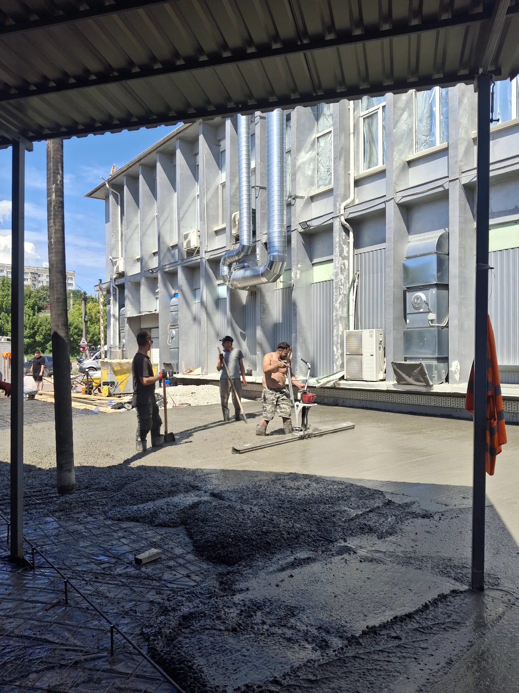
Ai un proiect asemănător?